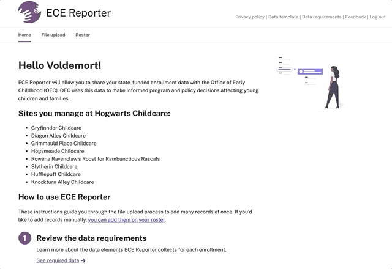

Guide: How to prepare your July to December data
Everything you need to meet OEC’s July to December data collection request.
Table of contents
- Review the data collection basics
- Review the data requirements
- Decide your method of data entry
- Download the latest data upload template
- Export or gather data from your system of record
- Enter your data in OEC’s template
- Upload your data to ECE Reporter
- Verify your data
Review the data collection basics
Data collection period
The data collection period begins July 1, 2020 and continues through December 31, 2020.
Data submission deadline
You must submit your data to OEC by 03/05/2021.
Enrollments to include
Children receiving funding through the following programs:
- Child Day Care
- Competitive School Readiness
- Priority School Readiness
- State Head Start
- Smart Start
Review the data requirements
You can find the latest definitions, rationale and accepted formats for every field collected in ECE Reporter on the data definition page in ECE Reporter.
Decide your method of data entry
ECE Reporter supports two methods:
- Enter data in OEC’s template and upload all your enrollments at once. See the rest of this guide for instructions.
- Enter enrollment records one at a time. See working with child records for more guidance.
Download the latest data upload template
ECE Reporter will only accept data in the latest template file format. You can download the template in ECE Reporter.
Export or gather data from your system of record
Your program may have the data ECE Reporter is requesting in a system of record such as ChildPlus or Powerschool.
If you have IT support, they may be able to work with you to create a report from your system of record with the data OEC requires. This can help avoid double data entry.
Enter your data in OEC’s template
Once you’ve read through the data requirements and gathered your enrollment data, it’s time to enter it into OEC’s data template.
- Add all the enrollment data you manage to OEC’s data template. You cannot use any other file to upload data to ECE Reporter.
- If you upload a file to ECE Reporter, you will erase any data for the sites you’re uploading data to.
- To keep things simple, make sure your data is as close to done as possible before uploading.
- ECE Reporter will check your data and prompt you to resolve any errors.
- If you need to make small updates, don’t worry! All of the data can be edited in the ECE Reporter tool.
See tips for formatting data for resources that may help you get your data into the format accepted by OEC.
Here’s what a completed record without any enrollment or funding changes will look like:
Add enrollments that have changed
Since the Office of Early Childhood is requesting data from 07/01/2020 to 12/31/2020, you’ll need to record enrollment and funding changes. This section will show you how to add those historical updates to OEC’s data template.
Here are the enrollment changes you’ll need to record:
- Changes to enrolled site
- Changes to age group
- Changes to funding types
To add these changes:
- Create a row with the most recent enrollment data for the child
- Fill in all required fields in that row
- Create another row for the child’s past enrollment(s)
- Make sure all of the fields in the child identifiers section match in every row referring to the same child
- In the new enrollment history row, add the previous enrollment and funding info to indicate the changes
- All other fields can be blank for the enrollment history row
See the examples below for a child enrollment that has had changes between July 1, 2020, to December 31, 2020.
Example record: Change to site
Example record: Changed to funding source and/or space type
Example record: Changed age group
Add enrollments that have been withdrawn
You’ll need to upload any enrollment that has withdrawn between July 1, 2020, and December 31, 2020.
The example below shows what a withdrawn record looks like in OEC’s template.
Example record: Withdrawn
Upload your data to ECE Reporter

Once all of your data is entered into the ECE Reporter data template format, you’re ready to upload!
To find the file upload page in ECE Reporter:
- Go to https://ece-reporter.ctoec.org/
- Sign in with your account information
- Find and click the file upload link in the navigation bars
- Choose your completed data template to upload
- Verify which sites you’re uploading data for
- Your file will be uploaded and checked for any errors
- You will see your roster with all of your records uploaded
Verify your data
See the verify your data page for ways to make sure your data was entered correctly in ECE Reporter.